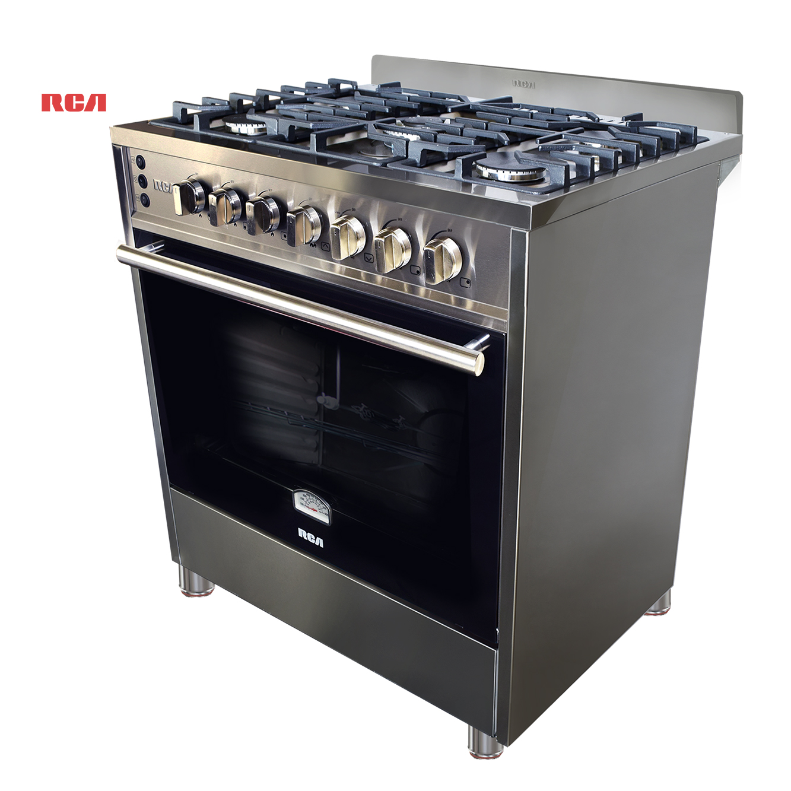

Estufas
Las estufas son un componente esencial en la cocina de cualquier hogar, proporcionando el calor necesario para cocinar una variedad de alimentos. Están disponibles en una amplia gama de estilos, tamaños y características para adaptarse a las necesidades y preferencias individuales de cada usuario.
Las estufas funcionan mediante la generación de calor a partir de una fuente de energía, ya sea gas, electricidad o inducción. Este calor se transfiere a través de quemadores, bobinas eléctricas o inducción electromagnética para calentar los utensilios de cocina.
Las estufas suelen estar fabricadas con materiales duraderos como acero inoxidable, hierro fundido, vidrio cerámico y cerámica de vidrio templado, que ofrecen resistencia a altas temperaturas y facilitan la limpieza y el mantenimiento.
